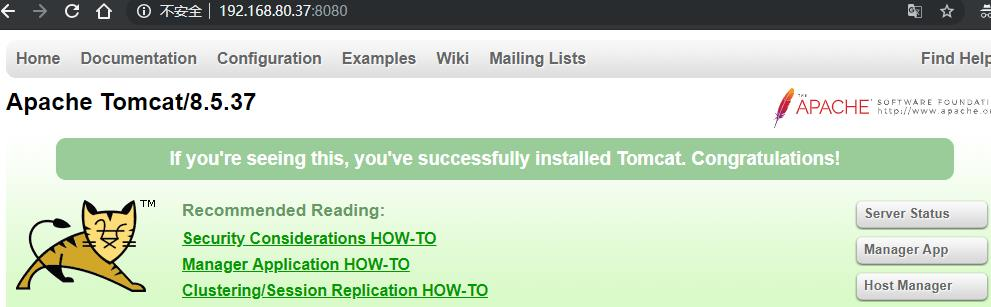
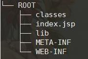
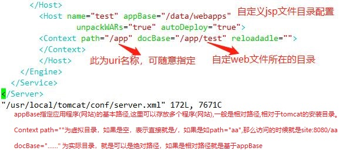
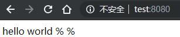
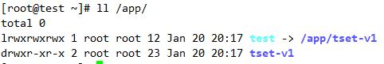
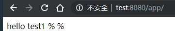
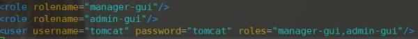
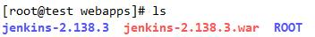

安装jdk
OpenJDK 开源，在linux中内置
java-VERSION-openjdk：
The OpenJDK runtime environment.
java-VERSION-openjdk-headless：
The OpenJDK runtime environment without audio and video support.
java-VERSION-openjdk-devel：
The OpenJDK development tools.
CentOS 7：
VERSION：1.6.0, 1.7.0, 1.8.0
注意：多版本并存时，可使用 alternatives命令设定默认使用的版本；
[oracle jdk](https://www.oracle.com/technetwork/java/javase/downloads/index.html)
安装相应版本的rpm包；
jdk-VERSION-OS-ARCH.rpm
例如:jdk-8u191-linux-x64.rpm
注意：安装完成后，要配置JAVA_HOME环境变量，指向java的安装路径；
rpm -ivh jdk-8u191-linux-x64.rpm
配置环境变量
vim /etc/profile.d/java.sh
export JAVA_HONE=/usr/java/default
export PATH=$JAVA_HOME/bin:$PATH
. /etc/profile.d/java.sh
了解当前的java环境：
java -version
安装tomcat
1.yum安装（Base Repo）
yum install tomcat-admin-webapps tomcat-webapps tomcat-docs-webapp
systemctl start tomcat
systemctl enable tomcat
2.二进制安装
在生产环境中我们需要将tomcat配置成以daemon守护进程来运行，主要有以下几个原因：
以daemon方式运行tomcat可使tomcat不受终端影响，不会因为退出终端而停止运行。
可以让tomcat以普通用户身份运行
可以让tomcat在系统启动时自动运行
useradd tomcat -s /sbin/nologin
tar xf apache-tomcat-8.5.37.tar.gz -C /usr/local/
/usr/local/
ln -sv apache-tomcat-8.5.37 tomcat
chown -R tomcat:tomcat apache-tomcat-8.5.37/
配置环境变量
vim /etc/profile.d/tomcat.sh
export CATALINA_BASE=/usr/local/tomcat
export PATH=CATALINA_BASE/bin:$PATH
启动
/usr/local/tomcat/bin/catalina.sh start

部署webapp的方法
deploy：将webapp的源文件放置于目标目录(网页程序文件存放目录)，配置tomcat服务器能够基于web.xml和context.xml文件中定义的路径来访问此webapp；将其特有的类和依赖的类通过class loader装载至JVM；
部署有两种方式：
自动部署：auto deploy
手动部署:
冷部署：把webapp复制到指定的位置，而后才启动tomcat；
热部署：在不停止tomcat的前提下进行部署；
部署工具：manager、ant脚本、tcd(tomcat client deployer)等；
undeploy：反部署，停止webapp，并从tomcat实例上卸载webapp；
start：启动处于停止状态的webapp；
stop：停止webapp，不再向用户提供服务；其类依然在jvm上；
redeploy：重新部署；
tomcat的两个管理应用:
manager：管理webapps应用程序
host-manager：管理虚拟主机
测试类应用，并冷部署
直接将程序目录放在webapps目录下面（不推荐）
1.创建一个webapp组织结构，必须在ROOT目录

mkdir -pv /data/webapps/ROOT/{lib,classes,WEB-INF,META-INF}
2.新建一个index.jsp
vim /data/webapps/ROOT/index.jsp
1 | <%@ page language="java" %> |
3.修改配置文件servel.xml

4.访问网页test/index.jsp

可以在host主机定义context上下文
mkdir /app/tset-v1
创建软连接，方便替换新文件，此时自定义的应用访问
ln -sv /app/tset-v1 /app/test


/usr/local/tomcat/bin/catalina.sh stop && /usr/local/tomcat/bin/catalina.sh start
tomcat管理工具
1.manager app：webapp管理工具，部署之后，重启服务，仍然有效

2. 打开http://IP:8080就可出现如下
自动部署
发工具将程序打包成war包，然后上传到webapps目录下面
站点主动解压部署

浏览器访问：
http://192.168.80.37:8080/jenkins-2.138.3